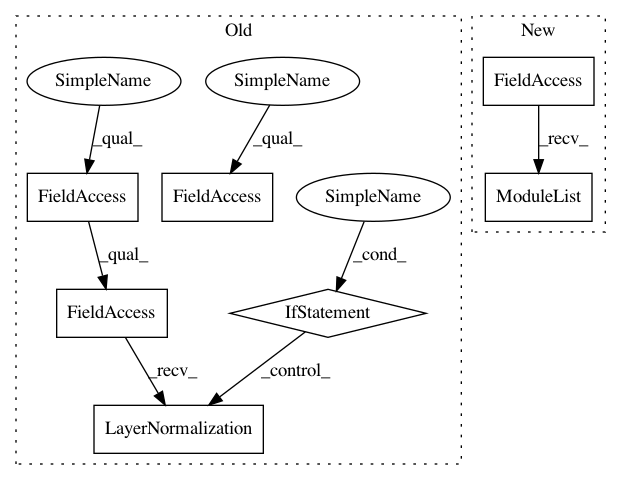

b97fe6310224efd2e7449e53d067f9e3adc178a5,layers/eight_mile/tf/layers.py,TransformerEncoderStack,__init__,#TransformerEncoderStack#Any#Any#Any#Any#Any#Any#Any#Any#Any#Any#Any#Any#Any#,2524
Before Change
super().__init__(name=name)
self.encoders = []
self.ln = tf.identity if layer_norms_after else tf.keras.layers.LayerNormalization(epsilon=layer_norm_eps)
if not is_sequence(rpr_k):
rpr_k = [rpr_k] * layers
After Change
:return: a cell
output_keep_prob = tf.contrib.framework.smart_cond(training, lambda: 1.0 - pdrop, lambda: 1.0)
state_keep_prob = tf.contrib.framework.smart_cond(training, lambda: 1.0 - pdrop if variational else 1.0, lambda: 1.0)
cell = rnn_cell(hsz, rnntype, st)
output = tf.contrib.rnn.DropoutWrapper(cell,
output_keep_prob=output_keep_prob,
state_keep_prob=state_keep_prob,
In pattern: SUPERPATTERN
Frequency: 4
Non-data size: 7
Instances
Project Name: dpressel/mead-baseline
Commit Name: b97fe6310224efd2e7449e53d067f9e3adc178a5
Time: 2020-07-21
Author: wliu@interactions.com
File Name: layers/eight_mile/tf/layers.py
Class Name: TransformerEncoderStack
Method Name: __init__
Project Name: dpressel/mead-baseline
Commit Name: 4d75253f817053abf2eb7bd909b5d0389b82814d
Time: 2021-03-02
Author: dpressel@gmail.com
File Name: layers/eight_mile/tf/layers.py
Class Name: TransformerEncoderStack
Method Name: __init__
Project Name: dpressel/mead-baseline
Commit Name: 4d75253f817053abf2eb7bd909b5d0389b82814d
Time: 2021-03-02
Author: dpressel@gmail.com
File Name: layers/eight_mile/tf/layers.py
Class Name: TransformerDecoderStack
Method Name: __init__
Project Name: dpressel/mead-baseline
Commit Name: b7bdc5b940af98a8014e9e2fc63d5e24cc3b013b
Time: 2020-08-16
Author: wliu@interactions.com
File Name: layers/eight_mile/tf/layers.py
Class Name: TransformerEncoderStack
Method Name: __init__